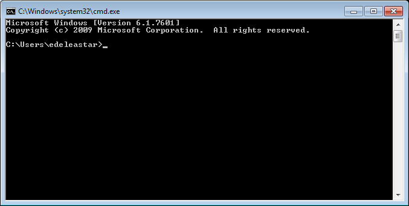
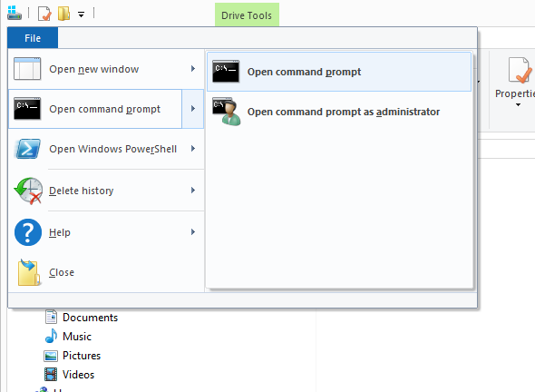
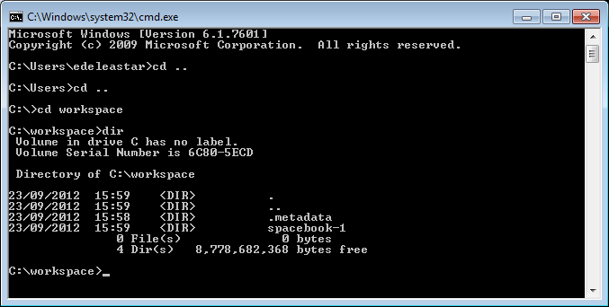

Objectives
Install software tools to serve a web site locally and also to deploy the web site to a public web server.
Command Prompt
Open a command prompt on Windows. The easiest way to do this is in Windows 7 to type 'cmd' in the Search Box on the Windows start menu:

When you type it, the start menu might change to the following:

...and if you press return, then the command window itself will appear:

On Windows 8 and 10, access the desktop from the home screen, and run File Explorer (may be in the toolbar). Then select File->Open Command Prompt:

Command Line
This is an alternative interface to Windows which it is important to become familiar with. In this window you can type what are sometimes called 'DOS' commands. These commands let you have a finer level of control of your PC, and are particularly important for programmers to master.
Here are some simple commands:
- dir
- list all files in a directory
- cd ..
- change to a parent directory
- cd \
- change to a specific directory
It is essential that you become adept at these commands, and a few others.
Bear in mind that these commands always have a 'current directory' in mind (a directory is another name for a folder). Try them now and see if you can 'navigate' to your web development workspace. For instance, if the folder is located as shown here:

Then the commands to get there will look like this:

If your workspace is located on another drive, the enter that drive letter first - say "G:", press return, and then try the cd and dir commands.

Note in all of the above that the 'prompt' in the command window is always showing the 'current' drive/directory.
Also, if you have a 'space' in your directory (a bad idea generally), then you will have to use quotation marks in the commands. Here is an example:

See in the above transcript that the directory name is "Web Development Workspace" - and it has been enclosed in double quotes.
In general, however, it is best to adopt the following conventions.
Never use spaces in directory or file names
Never use upper case in directory or file names
If you wish to use readable multiple words for a directory or file name, separate the words with '-'. e.g.
- web-development
- java-projects
Perhaps you might take this opportunity to adjust your workspace and projects to adopt the above conventions. If you do, then you will find that using DOS commands to navigate your folders will be considerably easier.
Before going on to the next step, make sure you are comfortable navigating in DOS around the file system, and in particular make sure you can navigate to your web development workspace.
Serving the site with Harp.js
To date you have been opening the web pages you have designed by locating them on your PC and opening the browser directly. This is adequate for simple pages, but does not accurately reproduce how the page/site will be browsed when it is deployed on the public Internet.
To reproduce this experience, we will need to install a web server on our workstations, start this server and have it make our site available in a simulated network. Some server tools can also help simplify the work flow of deploying our site to a public server so that it is accessible globally. We will attempt both in this lab.
Download this archive here
Unzip the archive to the root of C: drive. This may take a few minutes. The archive is not large, but contains many small files...
Make double sure the folder is in the root of C: drive - open a Command Prompt (see last step) and set G: to be your default drive, and list all directories:
C:\Users\yourid> cd \
C:\> dir
...
Directory of C:\
...
...
11/02/2015 10:00 AM <DIR> node
...
C:\>Then type the following command:
C:\> \node\initIt may respond with a scree full of information, which you can ignore.
Now type the following (first line only):
C:\> harp init demo
Downloading boilerplate: https://github.com/harp-boilerplates/default
Initialized project at c:\demoThen enter (first line only again):
C:\> cd demo
C:\demo> harp server
------------
Harp v0.19.0 – Chloi Inc. 2012–2015
Your server is listening at http://localhost:9000/
Press Ctl+C to stop the server
------------Now browse to this url here:
and you should see this page:

To stop 'serving' the page, enter Ctrl-C in the command prompt:
Harp v0.19.0 – Chloi Inc. 2012–2015
C:\demo> harp serverYour server is listening at http://localhost:9000/
Press Ctl+C to stop the server
------------
^C
Terminate batch job (Y/N)? y
G:\>Deploying a Web Site using Surge
Create a new project com the command line by entering the following:
harp init iot-webRemember, make sure to keep an eye on which folder this command is executed from. Opening the folder should reveal these files:

We will use files like these later - but for the moment delete all of these files and replace them with the following file called harp.json:
harp.json
{
"globals":
{
}
}If you havent already downloaded it - get the last version of the IoT web site from the last lab:
- Download Archive: https://github.com/wit-computing/iot-web/releases/tag/Lab05b
Unzip the project, and copy the public folder into the iot-web folder you have just created. Your iot-web folder should look like this:

Now we will serve the web site locally with this command:
C:> cd iot-web
C:\iot-web> harp server
Your server is listening at http://localhost:9000/
Press Ctl+C to stop the serverNotice that the command is executed form within the iot-web directory.
Verify that the site is available here:
Terminate the server again with ^C:
Your server is listening at http://localhost:9000/
Press Ctl+C to stop the server
Terminate batch job (Y/N)? y
^C
C:\iot-web>From still within the iot-folder, enter the following command:
C:\iot-web> surge
Welcome to Surge!
Please login or create an account by entering your email and password:Enter credential to create a new account now - be sure to remember the password. Surge will then deploy the site to a public server:
project path: C:\dev\iot-web\
size: 34 files, 2.3 MB
domain: dull-pet.surge.sh
upload: [====================] 100%, eta: 0.0s
propagate on CDN: [====================] 100%
plan: Free
users: youremail@domain.com
IP address: 192.241.214.148
Success! Project is published and running at dull-pet.surge.shThe domain can be customised -in the above example 'dull-pet' was generated, you can replace this with something more suitable (but unique, so perhaps include your initials, the current date or something that may not be used by someone else).
Open a browser to inspect the running site. This is now deployed and accessible globally!
Removing Web Sites from Surge
If you have published a number of sites you may want to recall what domains were generated, or perhaps remove some or all of the published pages.
The various commands are listed here:
To list all web sites:
C:\dev\iot-web>surge list
email: youremail@domain.com
token: *****************
iot-1.surge.sh
dull-pet.surge.sh
highfalutin-exchange.surge.sh
C:\dev\iot-web>To remove (delete) a site from the server use the teardown command:
C:\dev\iot-web>surge teardown highfalutin-exchange.surge.sh
email: youremail@domain.com
token: *****************
domain: highfalutin-exchange.surge.sh
Success - highfalutin-exchange.surge.sh has been removed.
C:\dev\iot-web>Using Templates in Harp.js
Create a new project on the root of the C drive called iot-web-ejs:
C:\> harp init iot-web-ejs
Downloading boilerplate: https://github.com/harp-boilerplates/default
Initialized project at c:\iot-web-ejsHere is another version of the IOT web site:
Download this somewhere, and copy the files in the archive into the iot-web-ejs project you have just created above. The folder should be structured something like this:
iot-web-ejs
├── harp.json
└── public
├── assets
│ └── images
│ ...
├── includes
│ ├── _curriculum.ejs
│ ├── _footer.ejs
│ ├── _header.ejs
│ ├── _sponsors.ejs
│ └── _summary.ejs
├── index.ejs
├── strands
│ ├── _layout.ejs
│ ├── data.ejs
│ ├── devices.ejs
│ ├── maths.ejs
│ ├── networks.ejs
│ ├── programming.ejs
│ └── project.ejs
└── style.cssThis is quite different from the site we examined in Step 04. This version is based on EJS templates
.. and we have been using the Harp.hs templating engine to get it running:
Server the web site now:
C:\> cd iot-web-ejs
C:\iot-web-ejs> harp server
------------
Harp v0.19.0 – Chloi Inc. 2012–2015
Your server is listening at http://localhost:9000/
Press Ctl+C to stop the server
------------Also, deploy the web site:
C:\iot-web-ejs> surge
Welcome to Surge!
Please login or create an account by entering your email and password:
project path: C:\dev\iot-web\
size: 34 files, 2.3 MB
domain: dull-pet.surge.sh
upload: [====================] 100%, eta: 0.0s
propagate on CDN: [====================] 100%
plan: Free
users: youremail@domain.com
IP address: 192.241.214.148
Success! Project is published and running at dull-pet.surge.shExercises
Exercise 1
See if you can deploy your assignment 1 project using surge. Here are the steps:
- Make sure you have the node+harp+surge packages installed on your computer.
- Create a new (empty) folder to contain your project. Into this folder place a file called `harp.json', containing the following contents:
{
"globals":
{
}
}- Place your entire project into a folder called
publicinside this project folder (as we did in step 06). - From the command line, enter the command:
harp serverVerify that your side it available on:
- Terminate the server with ^C, and then enter:
surge- This will deploy the web site:
project path: G:\dev\iot-web\
size: 34 files, 2.3 MB
domain: XXX.surge.sh
upload: [====================] 100%, eta: 0.0s
propagate on CDN: [====================] 100%
plan: Free
users: youremail@domain.com
IP address: 192.241.214.148
Success! Project is published and running at XXX.surge.sh- Verify that the site is available on the domain. You will have the opportunity to change the domain
XXX - Exchange project URLs with your friends!
- You may have had relative paths in your html files:
<a href="../stuff/mupage.html"> my stuff </a>Exercise 2:
Study the iot-web-ejs site carefully:
- or even more confusing:
<a href="../../stuff/mupage.html"> my stuff </a>These type of references can all be replaced with:
<a href="/stuff/mypage.html"> my stuff </a> <a href="/stuff/mypage.html"> my stuff </a>- Try this now - one link at a time to make sure it works.
Exercise 2
Examine the project you created in step 6 again:
iot-web-ejs
├── harp.json
└── public
├── assets
│ └── images
│ ...
├── includes
│ ├── _curriculum.ejs
│ ├── _footer.ejs
│ ├── _header.ejs
│ ├── _sponsors.ejs
│ └── _summary.ejs
├── index.ejs
├── strands
│ ├── _layout.ejs
│ ├── data.ejs
│ ├── devices.ejs
│ ├── maths.ejs
│ ├── networks.ejs
│ ├── programming.ejs
│ └── project.ejs
└── style.cssThis is the same site we deployed earlier - but divided into templates using EJS:
This systems is documented better here:
See if you can adapt your assignment 1 project to use EJS templates. This may reduce the amount of HTML you have in the project, and also allow you to have set of smaller files to maintain - but perhaps more of them.